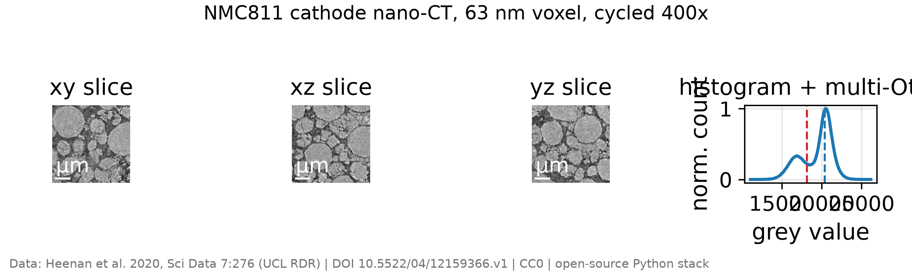
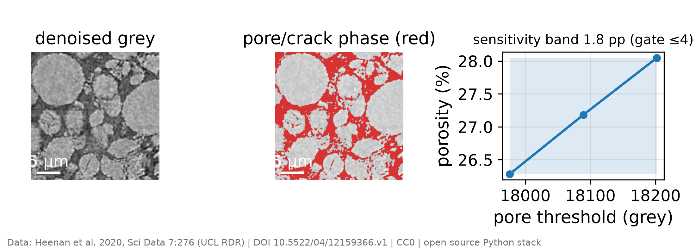
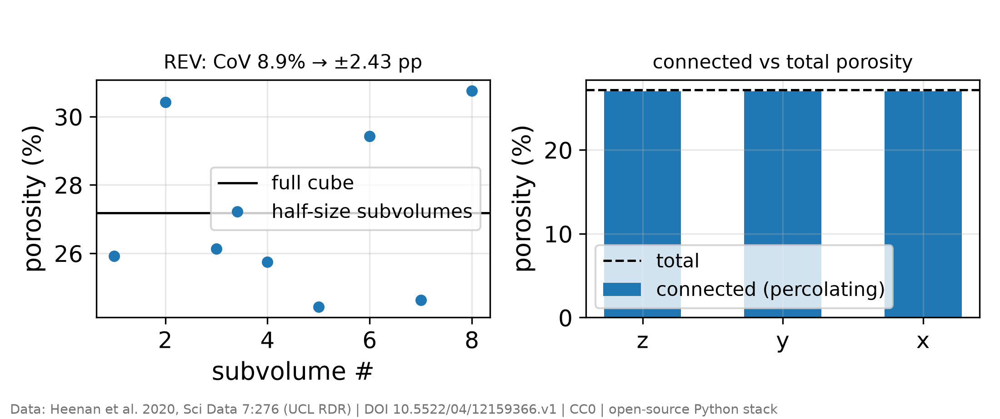
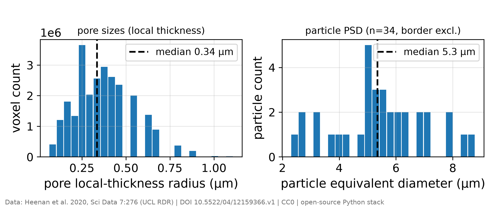
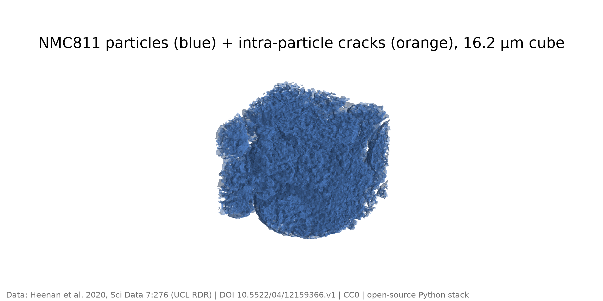
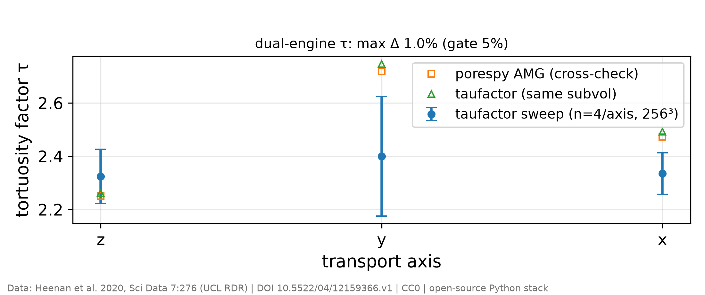
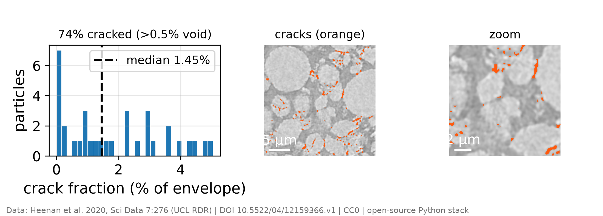
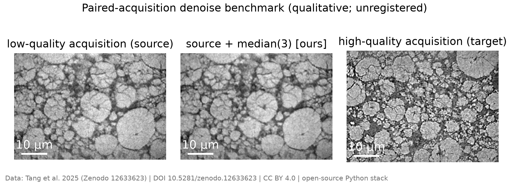
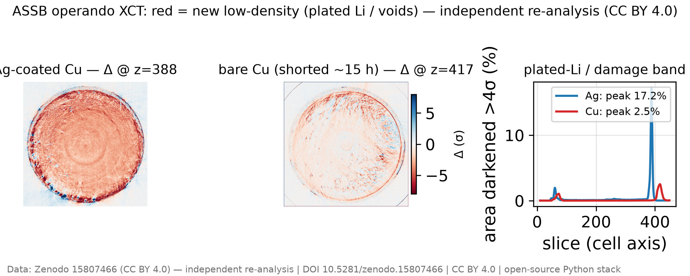

Segmentation, microstructure metrics, and defect quantification on X-ray micro- and nano-CT battery volumes, built entirely on an open-source Python stack (tifffile, scikit-image, porespy, taufactor) — the same underlying algorithms used by commercial CT-analysis workflows. Public datasets only, and the discipline is the point: every number carries an uncertainty band, two independent solvers must agree, and a volume that cannot support a defensible threshold is refused, not reported.
OPEN DATA · CC0 The core cathode study is a nano-CT volume of an NMC811 electrode imaged after 400 cycles (63 nm voxel; Heenan et al. 2020, Sci. Data 7:276, CC0). It anchors the whole quantification pipeline.
Orthogonal slices and the grey-level histogram are where every CT analysis starts — the histogram's phase peaks are what a segmentation threshold has to separate, and their overlap is the first honest signal of how hard that will be.

A porosity number without a threshold-sensitivity band is a guess dressed as a measurement. Here every porosity value ships with the interval it moves across as the threshold is swept, and a representative-volume check quantifies how much the answer depends on the sub-volume chosen.


Result: cathode porosity 27.2%, with a ±0.9 pp threshold band and ±2.4 pp volume-representativeness spread — the number and both of its error sources reported together.
From the segmented volume: the pore- and particle-size distributions by local thickness, a 3D rendering of the particle network, and the transport-relevant tortuosity factor — the last cross-checked by two independent solvers before it is allowed into the results.



After 400 cycles, intra-particle cracking is pervasive. The pipeline segments cracks inside each particle envelope and reports the fraction of particles affected — a quantification of the aged state, not an aged-versus-fresh causal comparison (no fresh reference volume is in scope).

The most important output of a measurement pipeline is sometimes a refusal. On the graphite-SiOx anode volume, the phase contrast is too weak to support a defensible pore threshold — the porosity would swing ±9.4 pp across the plausible threshold range.
A paired-quality dataset — the same cathode imaged at low and high acquisition quality — is an honest benchmark for denoising: you can see what a simple filter restores and, just as importantly, what it does not.

Registered difference imaging on an operando dataset of zero-excess solid-state cells resolves where low-density material (plated lithium / voids) appears between two states — a clean example of change-detection tomography on a real cell.

So what? The same 3D-tomography algorithms behind expensive commercial CT software run here on an open-source stack — and are held to a stricter standard than a point-and-click workflow enforces: uncertainty bands on every metric, two solvers that must agree, and a pipeline that refuses to report a number the data cannot defend. That refusal, not any single porosity value, is the headline: measurement integrity is a feature you build in, not a disclaimer you add later.
Future work: extend the registered-difference operando workflow to time-resolved series, tracking where low-density phases nucleate and grow across many states.